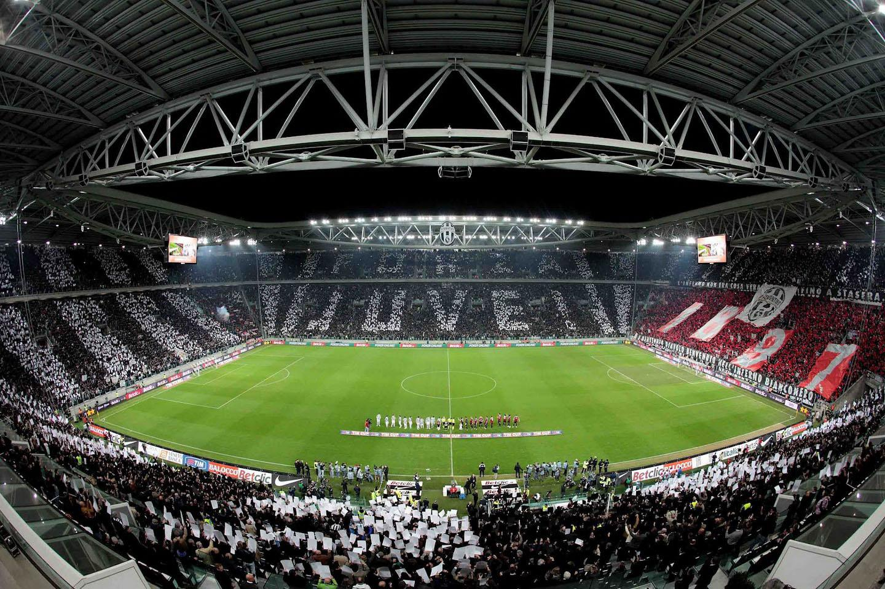

Juventus Football Club S.p.A.
Навигация
Allianz Stadium
«Альянц Стэдиум» (итал. Allianz Stadium) — футбольный стадион в Турине, домашняя арена клуба «Ювентус». Стадион открылся 8 сентября 2011 года и вмещает 41 000 зрителей.
При проектировке были учтены все современные меры безопасности. Доступ на трибуны осуществляется через четыре входа, расположенных по углам арены. Именно здесь проверяются билеты на матч, поэтому условия безопасности на подходах к арене очень высоки. Также построены необходимые подъезды для нормального функционирования средств быстрого реагирования, таких как скорая медицинская помощь. На каждом секторе находится 16 различных путей к сиденьям.
В случае экстренных ситуаций, полный стадион сможет освободиться за 4 минуты.
Дизайн стадиона выполнен в строгом стиле, которым всегда отличался сам клуб. Арена покрыта специальной прозрачной конструкцией, которую испытывали в аэродинамической трубе, её главной функцией является улучшение вида поля с трибун в течение дня, ночью же она будет гарантировать присутствие достаточного количества света для восстановления газона. Главной «визитной карточкой» стадиона стали две опоры, выполненные в форме буквы «Л» и выкрашенные в цвета итальянского флага.